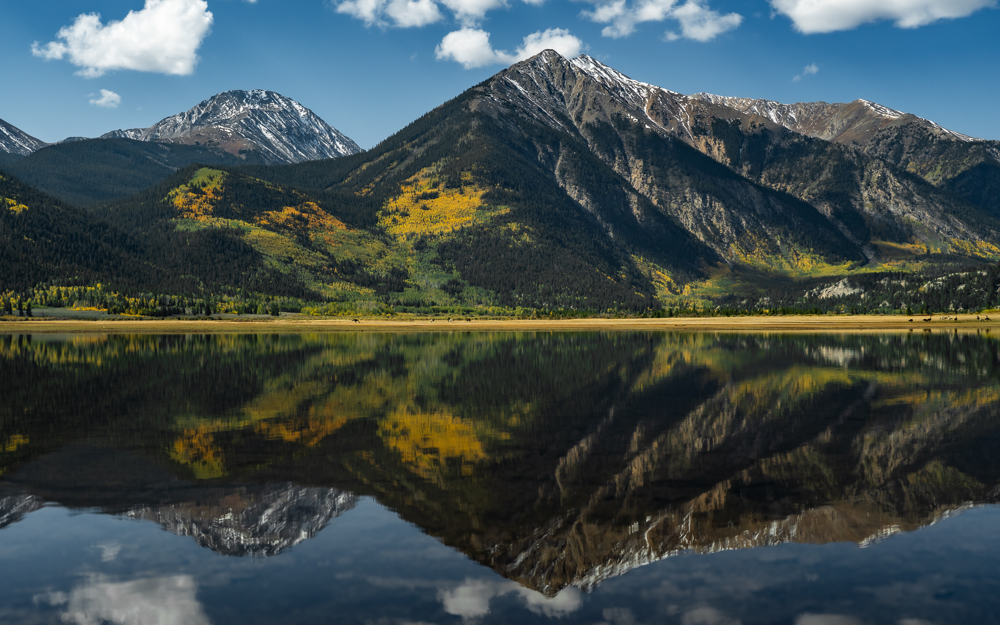
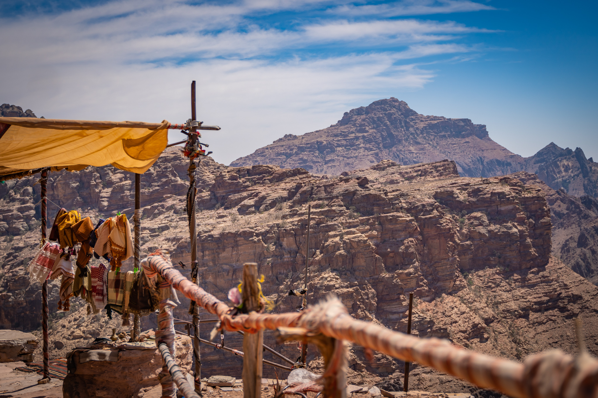
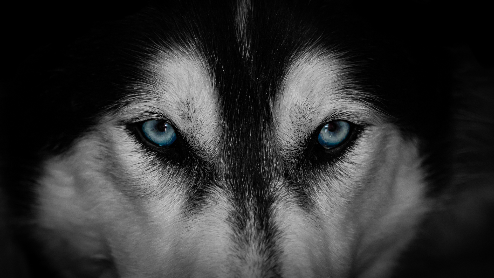
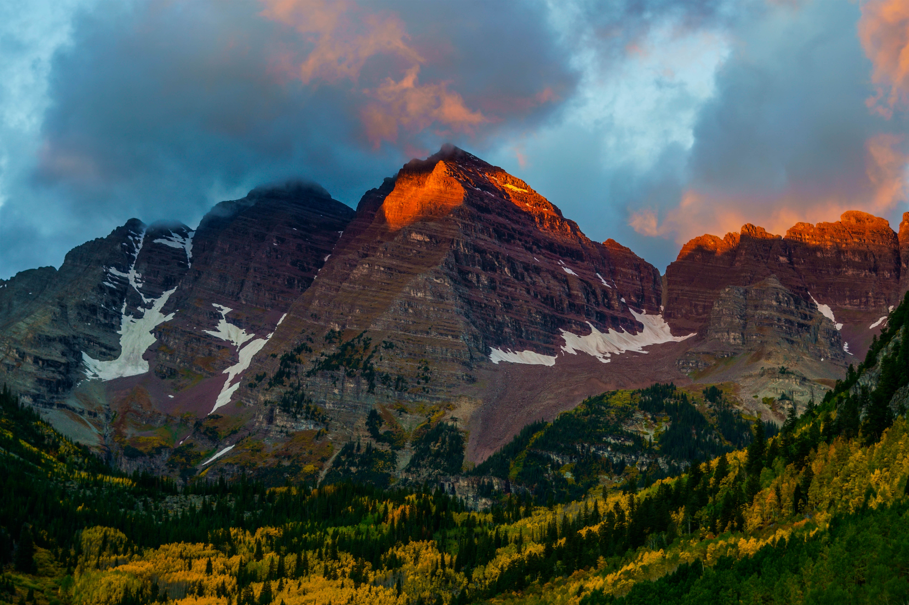

Reflective Mountain Range:
Believe it or not, I was on my way to go camping and stopped on the side of the road for this picture. The mountains alone were beautiful alone, but I saw a couple of ducks walk across a puddle and thought the picture would look pretty as a reflection. The water you see in this photo isn't even a foot deep it's an actual puddle.
- Loveland Pass, Colorado

Jordan:
I took this photo while traveling through Jordan. I was given the opprotunity to work hand in hand with the Jordanian Military and was shown around like a local. This is on the outskirts of Petra, a city that is also known as "Rose City". The culture in this area is very different from American culture and was a great experience.
- Petra, Jordan

Crystal Mill:
This is Crystal Mill, it is located in Carbondale, Colorado. I took this picture on an early fall morning. I really like how to fall colors really pop in this. I really didn't have to do much editing to this photo. I went in and made the trees more vibrant to stand out. One of my favorite things about landscape photography in Colorado is that it is so colorful and changes so drastically between seasons.
- Carbondale, Colorado

Garden of the Gods:
This is taken in Garden of the Gods in Colorado Springs. I was there hiking when I saw these rock climbers in their element. While I do enjoy mostly landscape, I also enjoy taking photos of people doing what they enjoy. As a rock climber myself, it was fun to capture this. I think the lighting and the shadows help focus on the individuals themselves.
- Colorado Springs, Colorado

Jack:
This is my husky Jack. I rescued him and was actually his third home, dispite him being such a great doggo. I was laying on the ground with him and just thought this angle was really great for him. The original photo had his body in it as well, but I cropped that out to have a main focus on his icy blue eyes.
- Colorado Springs, Colorado

Maroon Bells:
The Maroon Bells are two peaks in the Elk Moutains, Maroon Peak and Northern Maroon Peak, seperated by about 0.3 miles and a site to see. I traveled to this location a day prior to camp in order to get a sun rise photo of these beauties. I camped at the bottom of the mountain and hiked at 4am to get a good location and view.
- Elk Mountain, Colorado